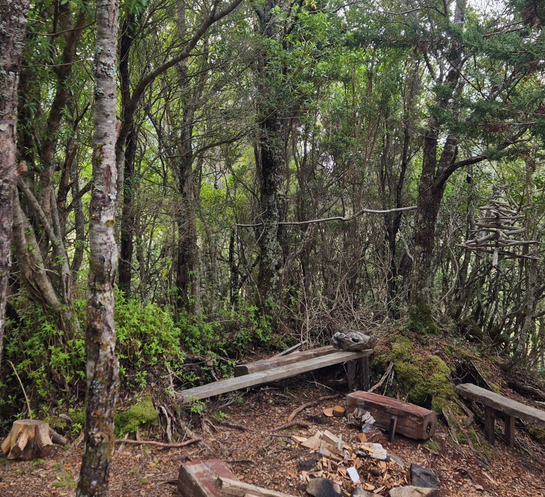
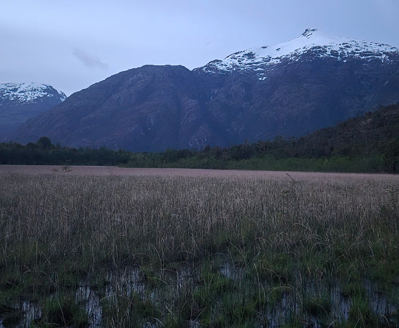

Explorando las Pasarelas de Tortel
Recorrido guiado por las pasarelas y la historia local
Un recorrido interpretativo por las emblemáticas pasarelas de Tortel, ícono arquitectónico construido íntegramente en madera de ciprés.
Durante la caminata conocerás la historia del poblamiento, las técnicas tradicionales de construcción, la adaptación al entorno y las dinámicas de vida en uno de los pueblos más singulares de la Patagonia chilena.
El recorrido incluye miradores naturales con vistas privilegiadas al fiordo y espacios de conversación que permiten comprender la identidad cultural del territorio.
Incluye:
- Anfitrión en español, inglés o francés
- Snack con productos locales (opción vegetariana disponible)
- Capas impermeables en caso de lluvia
Duración: 1 Hora 15 minutos
Máximo: 5 personas
Ideal para quienes visitan Tortel por primera vez
Reserva tu caminata guiada por las pasarelas y descubre la historia desde adentro.
Taller de Tallado en Madera
Experiencia cultural y oficios tradicionales en Tortel
Sumérgete en la tradición maderera que dio origen a Tortel a través de un taller práctico de tallado en madera.
Conocerás herramientas, técnicas y saberes transmitidos por generaciones, comprendiendo la relación histórica entre la comunidad y el bosque. Cada participante elaborará su propia cuchara utilizando maderas locales y técnicas tradicionales.
Más que un taller, es una experiencia de conexión con el oficio y el ritmo pausado de la vida patagónica.
Incluye:
- Anfitrión en español, inglés o francés
- Snack con productos locales
- Herramientas e insumos necesarios
Duración: 2 horas 30 minutos
Máximo: 5 personas
Una experiencia auténtica para quienes buscan turismo cultural en Tortel.
Reserva tu taller y crea tu propia pieza en madera nativa



Bahía Viva
Packraft en el delta del Río Baker y avistamiento de aves
Una experiencia de packraft en Tortel ideal para quienes buscan una navegación suave y contemplativa.
Remamos por el delta más corto del Río Baker, explorando un ecosistema donde confluyen aguas turquesa, bosques siempreverdes y aves migratorias. Durante el recorrido realizamos interpretación ambiental, observación de flora y fauna local y lectura del paisaje.
La travesía incluye un desembarco en playa para disfrutar un snack con productos locales antes de continuar hacia la bahía de Tortel, ingresando al pueblo desde el agua y apreciando sus pasarelas desde una perspectiva única.
Incluye:
- Anfitrión en español, inglés o francés
- Equipamiento completo de packraft y seguridad
- Binoculares y lupas para observación
- Snack con productos locales
Duración: 3 horas
Máximo: 4 personas + guía
Perfecta para amantes de la naturaleza y fotografía.
Reserva tu experiencia Bahía Viva y descubre Tortel desde el agua.
Río Baker en Packraft
Descenso por el río más caudaloso de Chile
Una travesía activa por el brazo más ancho del Río Baker, el río más caudaloso de Chile.
Navegamos en packraft por aguas intensamente turquesas, pasando por el arroyo Cascada Pisagua y bordeando la histórica Isla de los Muertos (descenso y recorrido interpretativo opcional con costo adicional).
Durante la navegación compartimos contexto natural e histórico del territorio, integrando paisaje, memoria y cultura local. Realizamos una pausa en playa para descansar y disfrutar un snack antes de continuar hacia la bahía de Tortel, ingresando al pueblo desde el río.
Incluye:
- Anfitrión en español, inglés o francés
- Equipamiento completo de packraft y seguridad
- Snack con productos locales
- Interpretación histórica y natural
Duración: 5 horas
Máximo: 4 personas + guía
Experiencia recomendada para viajeros activos y amantes de la aventura
Reserva tu descenso por el Río Baker y vive la Patagonia en movimiento.
Tardes Clandestinas
Experiencias gastronómicas en escenarios naturales de Tortel
Una propuesta íntima que combina gastronomía local, paisaje y navegación en Tortel.
Puede ser un brindis sobre el agua, un atardecer en la playa o un almuerzo casero junto al fuego. Cada encuentro es diseñado según temporada y condiciones climáticas, privilegiando escenarios naturales y productos locales.
Más que una comida, es una experiencia de conversación, territorio y hospitalidad patagónica.
Incluye:
- Anfitrión en español, inglés o francés
- Cena o aperitivo con productos locales + bebestibles
- Navegación según formato elegido
Duración: 2 horas 30 minutos
Máximo: 5 personas
Ideal para parejas, celebraciones especiales o grupos pequeños
Consulta disponibilidad y vive una tarde diferente en Tortel.
Arriendo de Packraft
Navega la bahía de Tortel a tu propio ritmo
Servicio de arriendo de packraft en Tortel para recorrer de forma autónoma la bahía y observar las pasarelas desde el agua.
Esta modalidad permite explorar el borde costero, remar entre embarcaciones locales y contemplar la arquitectura en madera característica del pueblo desde una perspectiva privilegiada.
Antes de zarpar realizamos una inducción de seguridad y recomendaciones de ruta para asegurar una experiencia responsable.
Incluye:
- Packraft, remo, chaleco salvavidas y bolsa seca
- Inducción de seguridad
- Recomendaciones de navegación
Duración: 1 hora aproximadamente
Máximo: 6 personas
Ideal para quienes desean libertad y contacto directo con el entorno.
Reserva tu packraft y explora la bahía de Tortel por tu cuenta.